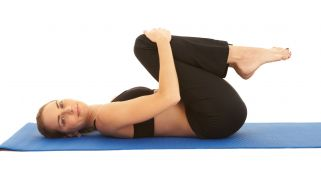
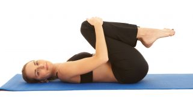

Ejercicios para fortalecer la espalda sin hacernos daño
2021.12.08 10:40

Marca Registro Buscar
¿Qué le sucede? Evalúe sus síntomas y comparta el resultado con un especialista Evaluar
Alimentación Nutrición Dietas Recetas Diccionario de alimentación Diccionario de dietas Belleza y piel Medicina estética Cuidados del pelo Cuidados faciales Cuidados del cuerpo Diccionario de belleza Sexualidad Sexualidad masculina Sexualidad femenina Sexualidad en pareja Diccionario de sexualidad Ejercicio físico Diccionario de deporte Familia Mi bebé Mi niño Adolescencia Mis mayores Diccionario de mi bebé Diccionario de mi niño Diccionario adolescencia Bienestar y mente Mindfulness Medicamentos Más
Más secciones
Salud Laboral Enfermedades Reproducción Fertilidad Embarazo Parto Diccionario de fertilidad Diccionario de parto Diccionario de embarazo Más que pacientes Cuidándote Preguntas y Respuestas Quienes somosAfiliados especiales
Home Ejercicio físico Ejercicios para fortalecer la espalda sin hacernos dañoEjercicios para fortalecer la espalda sin hacernos daño
Ejercicio físico
Actualizado a: Lunes, 21 Diciembre, 2020 09:28:47 Se recomienda interrumpir el ejercicio de espalda si algún movimiento produce dolor o entumecimiento en las piernas.
- Los mejores ejercicios para fortalecer la espalda y corregir la .
- Ejercicios de espalda en casa - Mundo Deportivo
- Los 15 mejores ejercicios para una espalda y dorsales en V
- Ejercicios para fortalecer la espalda sin hacernos daño
- 5 ejercicios básicos para lograr una espalda descomunal - AS .
- Los mejores ejercicios para acabar con el dolor de espalda
- 6 ejercicios con el propio peso para una espalda fuerte
- Los 11 mejores ejercicios para entrenar tu espalda en el .
- Guía de ejercicios para la parte baja de la espalda (Back .
- Ejercicios para la espalda en 15 minutos diarios - Mayo Clinic
- Los mejores ejercicios para fortalecer la espalda y corregir la .
en casa · Pues bien, este ejercicio de las dominadas deslizantes es uno de los más reputados a la hora de fortalecer y . - Ejercicios de espalda en casa - Mundo Deportivo
- Los 15 mejores ejercicios para una espalda y dorsales en V
- Ejercicios para fortalecer la espalda sin hacernos daño
- 5 ejercicios básicos para lograr una espalda descomunal - AS .
- Los mejores ejercicios para acabar con el dolor de espalda
- 6 ejercicios con el propio peso para una espalda fuerte
- Los 11 mejores ejercicios para entrenar tu espalda en el .
- Guía de ejercicios para la parte baja de la espalda (Back .
- Ejercicios para la espalda en 15 minutos diarios - Mayo Clinic
en casa · Pues bien, este ejercicio de las dominadas deslizantes es uno de los más reputados a la hora de fortalecer y .
 
